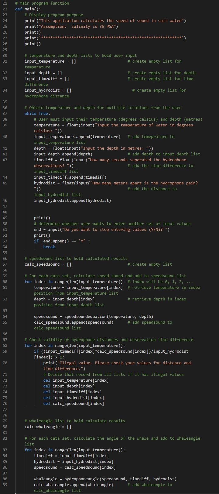

Scripting & Programming
Image by Gerd Altmann from Pixabay.
Image by Gerd Altmann from Pixabay.
Sometimes the tools you want don't exist. So why not just make them? Our programming specialist can create a tool that's perfect for your workflow.
Python is a powerful and versatile programming language, and one of the most popular in the programming world. Taking advantage of its extensive library of functionality-expanding modules, we can build a program that does what you want it to, elegantly and efficiently.

Python is also the language of choice for the GIS world's premier tool, ArcGIS. The ArcPy module lets you take your GIS work to the next level, combining existing tools with custom-made ones into easy to use script tools that you can use through the same familiar user interface as the built-in tools.
The Whale Mapping project aims to support marine conservation efforts with better tracking of the locations of whales. GIS Pros is proud to partner with FakeGreenpeace to build a tool that will help locating these majestic marine giants by using recordings from hydrophones to calculate the angle of the whale relative to the hydrophone's position.
